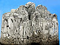

magnesium

Definition: Magnesium is a chemical element with the symbol Mg and atomic number 12. It is a shiny gray metal having a low density, low melting point and high chemical reactivity. Like the other alkaline earth metals (group 2 of the periodic table) it occurs naturally only in combination with other elements and it almost always has an oxidation state of +2. It reacts readily with air to form a thin passivation coating of magnesium oxide that inhibits further corrosion of the metal. The free metal burns with a brilliant-white light. The metal is obtained mainly by electrolysis of magnesium salts obtained from brine. It is less dense than aluminium and is used primarily as a component in strong and lightweight alloys that contain aluminium.
Source: Wikipedia
Wikipedia Page
Wikidata Page